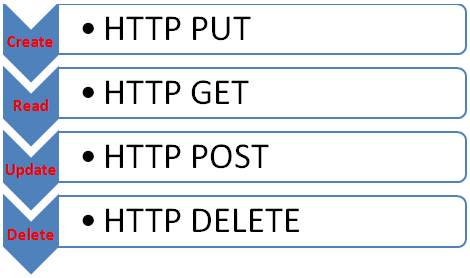
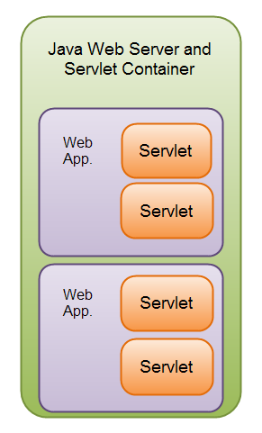
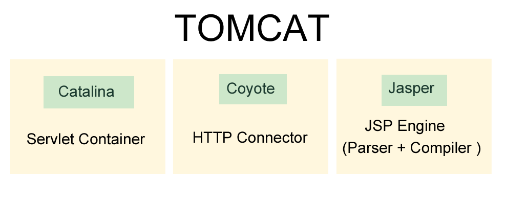

Servlet / Tomcat / Maven
Created by Ilya Buziuk / @ilyabuziuk
Introduction
Client-Server architecture
Main HTTP methods
What is done
-
Client part is ready! (js / html / css)
-
We know how HTTP works (XMLHttpRequest / AJAX)
What needs to be done
-
Write server part on Java
-
Tune interaction between Client and Server
Servlet
Servlet
Java class which responds to a particular type of network request - most commonly an HTTP request
Servlet
Under the Hood
Interface javax.servlet.Servlet
-
All servlets must implement this interface
-
All methods of interface Servlet are invoked by servlet container
Servlet Container
component of a web server that interacts with Java servlets
Container responsibilities:
Servlet lifecycle
URL mapping
Access rights
Servlet lifecycle
init
service
destroy
How it works?
How it works?

How it works?

Class hieranchy
HttpServlet service()
Custom Servlet
-
Extend HttpServlet
-
Add @WebServlet Annotation
-
Override doGet / doPost / doPut / doDelete
Custom Servlet
Custom Servlet
Http Servlet Response
JAR and WAR
What is JAR ?
What is WAR ?
What is WAR ?
web application archive that can be deployed on any servlet container. The .war file contains server-side classes, jsp, html, javascript etc.
WAR structure
Tomcat
Under the Hood
How to install standalone?
-
Download
-
Unpack
-
set JAVA_HOME var
-
set CATALINA_HOME var
-
update PATH var
%JAVA_HOME%\bin;%CATALINA_HOME%\bin
How to run (Windows / Linux)?
-
run startup.bat or ./startup.sh from console
Check
How to use in IDE?
-
Download
-
Unpack
-
Add to IDE
From theory to practise
TODOs 4.0 = same UI + new back-end
DEMO
Maven
Why do we need
Maven?
2 main reasons
-
Need to automate process of deployment
-
Dependency Hell
What is Maven?
-
Command line tool
-
Dependency manager
-
Building tool
How to install Maven?
-
Download
-
Unpack
-
set M2_HOME var
-
Add $M2_HOME/bin to PATH
Check installation
mvn -v
Project Object Model (POM)

-
version - identify version of the project (1.0, 1.1, etc.)
-
groupId - identify project uniquely across all projects
-
artifactId - name of jar / war without version